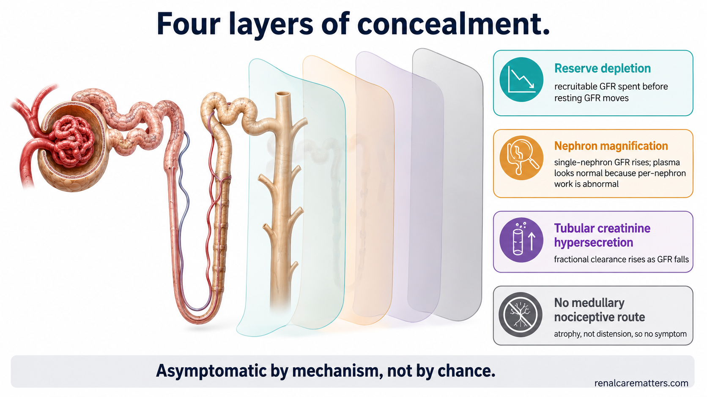
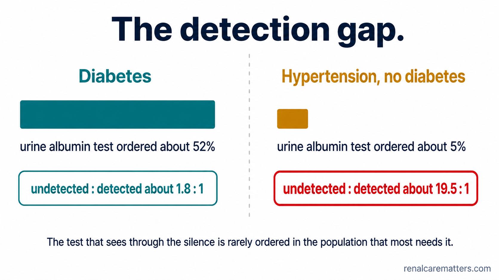
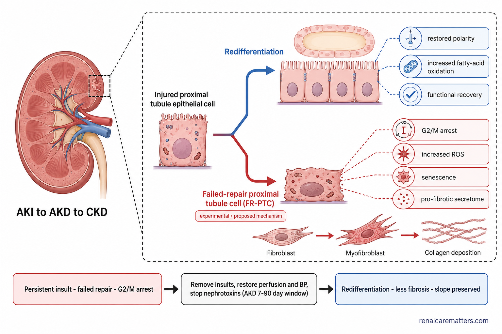
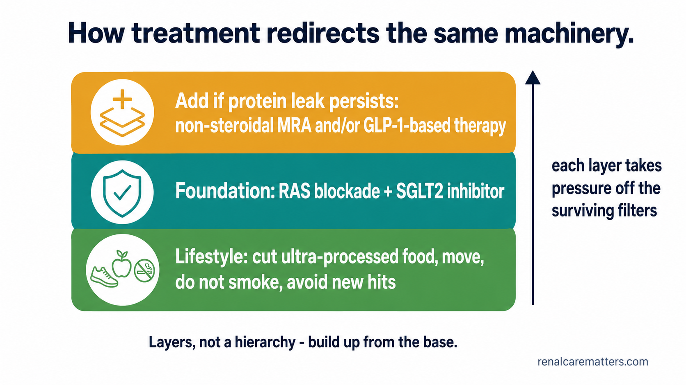

The thesis
Chronic kidney disease (CKD) is silent because the kidney is plastic. The same adaptation that hides the disease is the adaptation that drives it — and the same adaptive machinery, redirected, is what lets it partly heal.
This reframing collapses two apparently distinct clinical stories — asymptomatic progression and conditional reversibility — into one physiology viewed from two sides. It is organized around two four-part structures: a four-layer model of concealment (reserve depletion → nephron magnification → tubular creatinine hypersecretion → the absent nociceptive route) and a four-window model of plasticity (hemodynamic → cellular-adaptive → maladaptive-not-yet-fixed → established sclerosis). A methodological caution up front: these two structures are not isomorphic. They share a number and nothing else, and mapping a concealment layer onto a plasticity window would be a category error. Where the two connect is Bricker's trade-off hypothesis, which supplies the hinge from silence to plasticity.

The four-layer concealment model: functional reserve is consumed before resting GFR moves, surviving nephrons magnify per-nephron solute handling, the tubule hypersecretes creatinine onto the diagnostic test itself, and there is no medullary nociceptive route to generate symptoms.
- GFR
- Glomerular filtration rate.
The physiology of concealment
Intact nephron hypothesis. Bricker, Morrin and Kime (1960; restated 1969) established that surviving nephrons retain essential functional integrity as units — increased single-nephron GFR (snGFR), decreased fractional tubular reabsorption, increased tubular secretion, and intact tubuloglomerular feedback (TGF). Homeostasis is maintained by adaptation of the remaining units, not by residual "normal" tissue coexisting with dead tissue.
Magnification phenomenon. Bricker and colleagues (1978) showed that as nephron number falls, each survivor excretes a magnified share of the daily solute load. The plasma value is normal precisely because per-nephron work has become abnormal — the central idea for interpreting any normal plasma value in advancing CKD.
Renal functional reserve (RFR). Bosch (1983) and, in modern synthesis, Mueller and Luyckx (2024) frame RFR as the recruitable increment in GFR above baseline. Quoting the latter verbatim: "a 'normal' serum creatinine or Cystatin C can mask a significant loss of RFR and compensation via hyperfiltration." Donor and challenge studies describe roughly three phenotypes — no recruitable reserve, preserved reserve, and already-hyperfiltering (with a paradoxical fall on protein challenge). RFR is conceptually important and methodologically unsettled; there are no validated cut-points, and the critique that it lacks a standardized protocol is legitimate.
snGFR and endowment. Denic and colleagues (2017) measured, in ~1,400 living donors, a mean of 860,000 ± 370,000 nephrons per kidney — "per kidney" is load-bearing — with snGFR not varying materially with age (<70), sex, or height (≤190 cm). The teaching point: whole-kidney GFR differences in health are largely nephron-number differences; an elevated snGFR is a risk phenotype, not spare capacity.
Absence of a nociceptive route. Renal afferents are densest in the pelvis, present in the cortex, and effectively absent from the medulla; nociception requires ischemia, infection, obstruction or parenchymal injury, with referral over T12–L3. Chronic nephron loss produces atrophy, not distension — so there is no capsular or pelvic stretch to signal. The silence here is the absence of a nociceptive route rather than a suppressed one; capsular distension, sometimes invoked, is not the operative mechanism in chronic loss.
Symptoms cannot stage the disease. Fletcher and colleagues (2022) — 449 studies, 199,147 participants, 62 countries — found fatigue prevalence 70% (95% CI 60–79) in CKD not on kidney replacement therapy (KRT) versus 70% (64–76) on dialysis. The review does not present an estimated glomerular filtration rate (eGFR)–symptom correlation, so it cannot be read as one; the defensible statement is simply that symptom burden is uninformative for stage.
Creatinine hypersecretion — a Bricker adaptation on the diagnostic test
This is the least-appreciated of the four layers, and the only one that operates on the diagnostic test itself. Shemesh and colleagues (1985) studied 171 patients with glomerular disease, comparing creatinine against inulin, DTPA and 19 Å dextran. Fractional clearances relative to inulin: DTPA 1.02 ± 0.14, dextran 0.98 ± 0.13 — neither differing from unity — while creatinine was 1.64 ± 0.05 (p<0.001), reducible toward unity by intravenous cimetidine, with fractional secretion varying inversely with GFR. The authors' conclusion, verbatim: "creatinine is hypersecreted progressively by remnant renal tubules as the disease worsens… attempts to use creatinine as a marker with which to evaluate or monitor glomerulopathic patients will result in gross and unpredictable overestimates of the GFR."
Muscle-mass dependence and eGFRcr–eGFRcys discordance. Estrella and colleagues (CKD Prognosis Consortium, 2025) found a cystatin C–based estimate ≥30% lower than the creatinine-based estimate in 11% of 821,327 outpatients and 35% of 39,639 inpatients, with mortality 28.4 versus 16.8 per 1,000 person-years (HR 1.69) and excess cardiovascular mortality, atherosclerotic disease, heart failure and KRT.
Guideline positions (KDIGO 2024). Rec 1.1.2.1 (1B): use creatinine-based eGFR; where cystatin C is available, estimate the category from the combination. Rec 1.2.2.1 (1C): use eGFRcr-cys when eGFRcr is less accurate and GFR affects decisions. Practice Point 1.2.2.7: differences between eGFRcr and eGFRcys are informative in both direction and magnitude; the KDIGO Table 2 indication list (low muscle mass, amputation, extremes of body size, vegetarian diet, cirrhosis, malnutrition) names where creatinine misleads.
Cross-sectionally blind, longitudinally informative
Creatinine is blind cross-sectionally against a population reference interval and considerably less blind longitudinally against the patient's own baseline. This is both the argument for slope-based monitoring and the origin of the patient-facing line "your normal is not the lab's normal." A 2025 preprint re-analysing the Shemesh data argues this explicitly; it remains a preprint and is weighted accordingly rather than as settled literature.
The trade-off hypothesis
Bricker's trade-off hypothesis (1972) holds that homeostasis for a given solute is preserved, as nephrons are lost, only by permitting a sustained rise in a regulating hormone — whose non-renal actions become the disease. The uremic syndrome is, substantially, an endocrinopathy of adaptation rather than simple toxin accumulation.
The modern worked example is fibroblast growth factor 23 (FGF23). In Isakova and colleagues (2011), among 3,879 Chronic Renal Insufficiency Cohort (CRIC) participants with CKD stages 2–4, mean phosphate and median parathyroid hormone (PTH) were in the normal range while median FGF23 was already markedly elevated; high FGF23 was more common than secondary hyperparathyroidism or hyperphosphatemia in every eGFR stratum, and the eGFR threshold at which the FGF23 slope increased was significantly higher than the corresponding PTH threshold. The sequence is FGF23 ↑ → calcitriol ↓ → PTH ↑ → phosphate ↑, with phosphate last. Only the sequence is established; the specific eGFR values at which each hormone inflects are not, and are best left unquantified.
The unifying principle
The glomerular parallel completes the loop: hyperfiltration is the same bargain expressed hemodynamically — total GFR preserved at the cost of glomerular capillary hypertension, podocyte stress, and the sclerosis it is compensating for. The compensation is the engine. A normal phosphate, like a normal creatinine, is not evidence of quiescence; it is evidence of work.
Concealment at the population scale
The concealment described mechanistically above is measurable epidemiologically. In the United States, CKD prevalence is ~14% (37 million) with ~87% unaware; awareness has not improved over two decades (9.4% in 1999 → 10.8% in 2020, non-significant; Ozieh 2025). Awareness rises with risk but tops out at 49.6% even among those at ≥15% five-year kidney-failure risk (Chu 2020). Undiagnosed stage 3 ranges from 64.3% (USA) to 95.5% (France) across five countries, and the missed phenotype is precisely the quietly-compensating patient — female sex, stage 3a, and absence of diabetes or hypertension (Tangri, BMJ Open 2023).
The test that sees through the silence — the urine albumin-to-creatinine ratio (uACR) — is ordered in only 17.5% of at-risk adults overall (52.3% with diabetes, 5.1% in hypertension without diabetes; Chu 2023), and the undetected-to-detected albuminuria ratio is 1.8:1 in diabetes versus 19.5:1 in hypertension (Shin 2021). Up to ~40% of the CKD population is albuminuria-only with a normal eGFR (a figure Chu carries from prior literature rather than a primary measurement, and best cited as such).
Does detection change outcomes? REVEAL-CKD (Tangri, Advances in Therapy 2023): after a stage-3 diagnosis was recorded, angiotensin-converting enzyme inhibitor (ACEi) use rose (RR 1.87), angiotensin receptor blocker (ARB) use rose (RR 1.91), mineralocorticoid receptor antagonist (MRA) use rose (RR 2.23); annual eGFR decline moved from −3.20 to −0.74; rapid decliners fell from 47.1% to 39.2%. Per year of diagnostic delay: progression HR 1.40 (1.31–1.49), kidney failure HR 1.63 (1.23–2.18). Yet uACR monitoring only doubled to 0.05 measurements per person-year — recognition improves care from appalling to poor. Early nephrology referral is associated with lower mortality (Smart & Titus 2011; OR 0.51 at 3 months, 0.45 at 5 years).
What the screening evidence does and does not support
KDIGO frames case-finding as a practice point — "test people at risk for and with CKD using both urine albumin measurement and assessment of GFR" (PP 1.1.1.1) — not a graded 1A population-screening recommendation, and it should not be represented as one. The United States Preventive Services Task Force (USPSTF) 2012 "I" statement remains operative as of August 2026 (the topic sits at Stage 2 with no draft). Cusick and colleagues (2023) modeled one-time screening at age 55 with sodium-glucose cotransporter-2 (SGLT2) inhibitor treatment at $86,300 per quality-adjusted life-year (QALY). On balance, there is no randomized controlled trial (RCT) showing CKD screening improves hard outcomes, while the observational and modeling support is strong — both halves belong in any honest summary.

The detection gap. uACR is ordered in ~52% of at-risk patients with diabetes but only ~5% of those with hypertension alone; undetected-to-detected albuminuria runs 1.8:1 in diabetes versus 19.5:1 in hypertension — the hypertensive CKD population is nearly invisible in practice.
- uACR
- Urine albumin-to-creatinine ratio.
The four windows of plasticity
| Axis | Timescale | Reversibility | Substrate | Clinical read-out |
|---|---|---|---|---|
| 1 · Hemodynamic | Minutes → weeks | Fully reversible | Afferent/efferent tone, TGF resetting, reserve recruitment | The eGFR "dip" after a sodium-glucose cotransporter-2 inhibitor (SGLT2i) / renin–angiotensin system (RAS) blockade / MRA / endothelin receptor antagonist (ERA) / BP intensification |
| 2 · Cellular-adaptive | Weeks → months | Largely reversible | Tubular dedifferentiation → redifferentiation (SOX9, Wnt/β-catenin); podocyte foot-process recovery | Recovery within the acute kidney disease (AKD) window; proteinuric remission |
| 3 · Maladaptive, not yet fixed | Months → years | Partly reversible | Failed-repair proximal tubule cells (FR-PTC), G2/M arrest, senescence, capillary rarefaction, FAO/PGC-1α failure, early fibrosis | Bending the chronic eGFR slope; albuminuria regression |
| 4 · Established sclerosis | Years | Only if the insult is completely removed | Glomerulosclerosis, mature interstitial collagen | Fioretto's 10-year pancreas-transplant biopsies |
| — Nephron number | — | Never regenerated | Nephrogenesis ends at 34–36 weeks' gestation | Endowment fixed; only per-nephron architecture recovers |
Axis 1 — hemodynamic. The acute eGFR dip on starting an SGLT2 inhibitor, RAS blocker, non-steroidal MRA or endothelin antagonist is de-hyperfiltration: restoration of TGF and reduction of glomerular capillary pressure, not injury. KDIGO PP 2.1.4 anchors the >30% threshold for evaluation. In EMPA-KIDNEY the acute dip averaged −2.12 (1.83–2.41) mL/min/1.73 m² and the subsequent chronic slope difference was ~50%.
Axis 2 — cellular repair. Proximal tubule cells dedifferentiate and redifferentiate after injury (SOX9- and Wnt/β-catenin-dependent programs); complete repair restores function. The fork between adaptive repair and the failed-repair state is where trajectory is set.
Axis 3 — maladaptive repair, acute kidney injury (AKI) → CKD. FR-PTC arrested in G2/M drive a pro-fibrotic secretome; senescence, peritubular capillary rarefaction and fatty-acid-oxidation/PGC-1α failure entrench it. The ADQI-16 acute kidney disease (AKD) construct names the actionable 7–90-day window between acute kidney injury (AKI) and CKD. Return of creatinine to baseline after AKI does not exclude nephron loss — Layer 1 of the concealment model recurring post-AKI, and the mechanistic argument for uACR plus follow-up eGFR rather than a single reassuring creatinine.
Axis 4 — structural regression. Fioretto and colleagues (1998): eight patients with type 1 diabetes and isolated pancreas transplantation showed no improvement at 5 years but substantial reversal of glomerular and tubular lesions at 10 years, with urine albumin falling ~103 → 30 → 20 mg/day. The condition is complete, sustained removal of the insult over more than five years — and creatinine clearance still declined even as structure improved. The morphometric detail is best described qualitatively; the exact GBM/mesangial values are not independently verified.

The injured proximal tubule at a fork: redifferentiation restores a functional tubule, while the failed-repair path (G2/M arrest, senescence, a pro-fibrotic secretome) drives interstitial fibrosis. Removing the insult inside the AKD window is where the fork is decided.
- FR-PTC
- Failed-repair proximal tubule cell.
- AKD
- Acute kidney disease (7–90 days).
- FAO
- Fatty-acid oxidation.
Nephron endowment and podocyte thresholds
Podocyte plasticity is bounded: experimental depletion studies (Wharram model) demonstrate threshold effects — modest loss is compensated by hypertrophy and foot-process remodelling, but beyond a threshold (~20–40% depending on model) segmental glomerulosclerosis and irreversible loss follow, because podocytes are terminally differentiated and minimally proliferative. Endowment sets the denominator: nephrogenesis ceases at 34–36 weeks, low birth weight and prematurity reduce endowment, and the Denic donor data anchor the mean at 860,000 ± 370,000 per kidney. The clinical corollary is that "reversibility" always operates on per-nephron architecture and never on nephron count.
Redirecting the machinery: the evidence stack
The therapeutics that bend the slope all act by reducing maladaptive hyperfiltration and its downstream signaling. Foundational RAS blockade at maximally tolerated dose plus an SGLT2 inhibitor; non-steroidal MRA and glucagon-like peptide-1 (GLP-1)-based therapy layered above; lifestyle as the base. Selected confirmed effect sizes:
| Trial | Agent / class | Primary kidney outcome | Slope / albuminuria |
|---|---|---|---|
| EMPA-KIDNEY (2023) | Empagliflozin (SGLT2i) | HR 0.72 (0.64–0.82) | Acute dip −2.12; chronic slope −2.75 → −1.37 (≈50% relative) |
| DAPA-CKD (2020) | Dapagliflozin (SGLT2i) | HR 0.61 (0.51–0.72) | Effect across diabetic and non-diabetic CKD |
| CREDENCE (2019) | Canagliflozin (SGLT2i) | HR 0.70 (0.59–0.82) | uACR −31% |
| FLOW (2024) | Semaglutide (GLP-1) | HR 0.76 (0.66–0.88) | Slope benefit +1.16 mL/min/1.73 m²/yr |
| FIDELITY (2022) | Finerenone (nsMRA) | Kidney composite HR 0.77 (0.67–0.88) | Additive on RAS + SGLT2i background |
Sequencing. RAS blockade to maximally tolerated dose → SGLT2 inhibitor (eGFR ≥20) → if uACR ≥30 mg/g persists, add a non-steroidal MRA (eGFR ≥25, K⁺ ≤5.0) and/or GLP-1-based therapy → reassess uACR at 4 and 12 weeks, targeting ≥30% reduction. The CONFIDENCE trial (2025) supports combined RAS + SGLT2i + finerenone with greater albuminuria reduction; its per-arm hyperkalemia rates reflect a high-risk subgroup and should not be read as trial-wide. American Diabetes Association (ADA) 2026 §11 endorses more simultaneous, rather than strictly sequential, initiation in high-risk patients. Maintenance dependency is intrinsic: post-trial washout data (EMPA-KIDNEY) show benefit largely converging within ~6–12 months of stopping — disease modification requiring maintenance, not a reset.
Consistency points worth carrying into practice
SGLT2 inhibitor eligibility is not diabetes-gated (KDIGO Rec 3.7.2, 1A; EMPA-KIDNEY was 54% non-diabetic). "Four pillars" is commentary vocabulary, not KDIGO's — attribute to the comprehensive-strategy concept (PP 3.1.1). Potassium management: restrict the additive, liberalise the plant; salt substitutes are potassium chloride. Protein restriction always carries its sarcopenia counterweight. Race-free eGFR (CKD-EPI 2021) with cystatin C where creatinine misleads. Anemia language follows KDIGO 2026 (systemic iron deficiency / iron-restricted erythropoiesis; ESA rather than HIF-PHI first-line, 2D).

The therapy stack redirects the same adaptive machinery: lifestyle at the base, RAS blockade plus an SGLT2 inhibitor as the foundation, and a non-steroidal MRA and/or GLP-1-based therapy added when albuminuria persists — layers, not a KDIGO "pillars" hierarchy.
The Philippine argument
The concealment thesis has a sharp Philippine edge. Reported dialysis census rose from 53,296 (2023) to 64,845 (2024) — a 22% single-year increase — and the leading causes of end-stage kidney disease (ESKD) are hypertensive nephrosclerosis (33.07%) ahead of diabetic nephropathy (30.04%), i.e. a predominantly screening-detectable population (these figures are carried via society communications rather than a primary registry release, and are best cited as such pending the primary NKTI/Philippine Renal Disease Registry report). Estimated CKD prevalence is 10.2 million cases (9.5–11.1; Makmun 2025) — and that same source states ESKD incidence data are unavailable for the Philippines. That registry gap is itself a research and advocacy priority — better named than filled with a news-derived per-million figure.
The screening asymmetry
PhilHealth (the Philippine Health Insurance Corporation) reimburses up to ₱990,600 per patient per year for dialysis (156 sessions × ₱6,350), while the creatinine-and-urine-albumin pair that could have identified the same patient a decade earlier sits outside its screening packages. KDIGO Rec 1.4.1 (2C) — point-of-care testing (POCT) for creatinine and urine albumin where laboratory access is limited — is the implementable answer for provincial practice. (The "screening not covered" claim currently rests on a society statement and warrants confirmation against a current PhilHealth circular.)
Clinical decision algorithms
Axis 3, becoming druggable
The frontier is pharmacological access to maladaptive repair. Candidate approaches: autologous cell therapy (e.g. rilparencel) — interpret against strong regression-to-the-mean pressure in slope endpoints and early-phase, uncontrolled designs; aldosterone synthase inhibition; endothelin-A antagonism (with fluid-retention mitigation); and senolytic / FR-PTC-directed strategies aimed squarely at the G2/M-arrested, senescent tubular population. None yet warrants clinical adoption outside trials; frame them as "axis 3 becoming targetable," not as available therapy.
What this framework does not license
- No RCT demonstrates that CKD screening improves hard outcomes — the case is observational, dose-response, and model-based.
- RFR has no validated cut-points and no standardized challenge protocol.
- The four concealment layers and four plasticity windows are not isomorphic; any 1-to-1 mapping is an artefact of the shared number.
- Structural regression is documented only with complete, sustained removal of the insult over years; it is not a routine expectation.
- Surrogates are surrogates: a 30% uACR reduction is associated with ~19% lower hazard, not a guarantee.
- Nothing regenerates a nephron; all "regeneration" evidence is remodelling within surviving units, and cell-therapy data are early-phase.
- Symptom burden cannot stage disease, and trajectory cannot be inferred from how a patient feels.
Patient-facing companion
The lay-register version of this material — same physiology, grade 8–10 reading level, with the dip explainer and the five levers — is Why Kidney Disease Is Silent →. Reciprocal, self-canonicalising, not duplicate content.